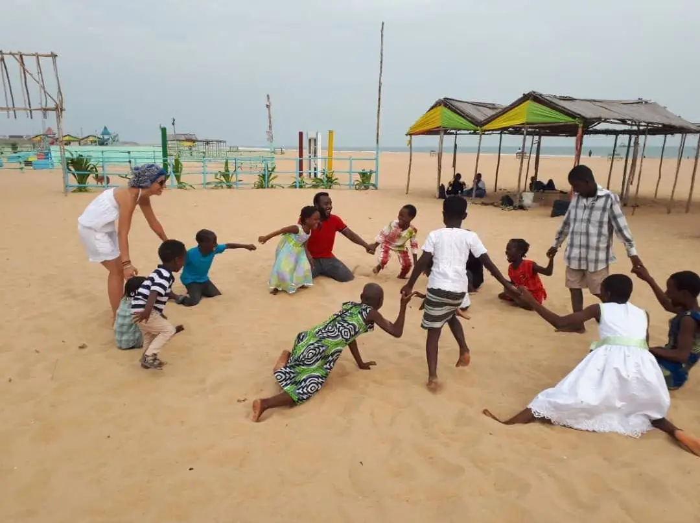

Our projects
Five concrete actions, carried out every day, so every child can grow, learn and thrive.

Neighborhood day care
A place to listen, play and learn for neighborhood children.
Since January 2019, the center welcomes around forty neighborhood children on Wednesdays and Saturdays. Most attend school and come for a place to relax, be listened to and take part in educational activities.
- Outings and events
- Reading workshops
- Sports and games
- Hygiene and health awareness

Education
Going to school and growing in confidence.
The children have been going to school since the 2018 school year. One child attends a specialized school suited to his learning difficulties. Every day, the educational team offers awakening and motor-skills activities to the youngest.
- Schooling for every child
- Support tailored to each need
- Awakening and motor skills for ages 0-5

Food
Balanced meals, 4 times a day.
Balanced menus, renewed every quarter and adapted to the children’s needs, are cooked with local products by a cook. The center can now offer 4 meals a day.
- Local products
- Menus renewed every quarter
- 4 meals a day

Health and hygiene
Children closely monitored, families informed.
Health is central to OHANA’s mission: vaccinations, weight and height monitoring, medical care, a small infirmary, preventive medicine (malaria, deworming) and specialist consultations (psychologist, speech therapist, pediatrician). The NGO also runs prevention campaigns with neighborhood families and training in first aid, nutrition and hygiene.
- Vaccines and growth monitoring
- Specialist consultations
- Prevention and training

Socio-educational support
A personal plan for every child.
The whole team prepares activities that change every week to nurture the children’s creativity, curiosity, motor and cognitive skills. This work lets us build a personal plan for each child. Educational outings, such as a turtle release, complete the program.
- Varied activities every week
- Individual plan for each child
- Educational outings